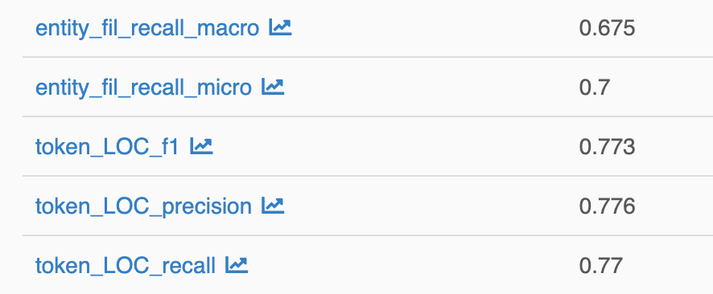
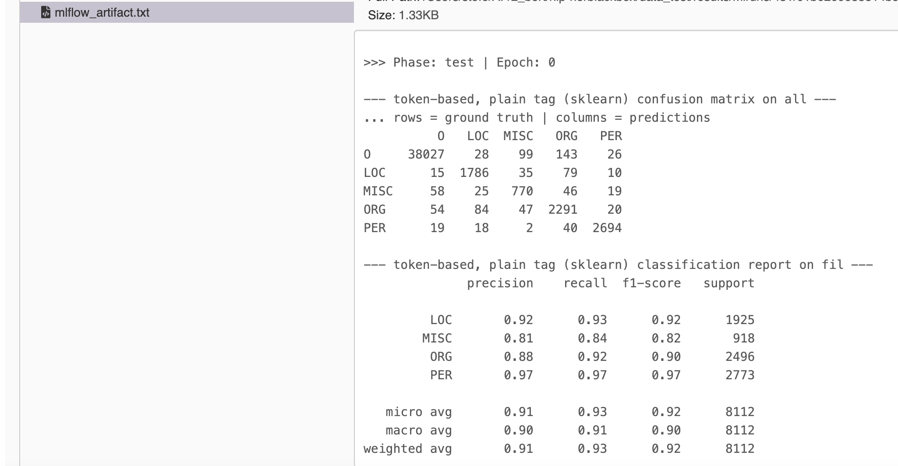
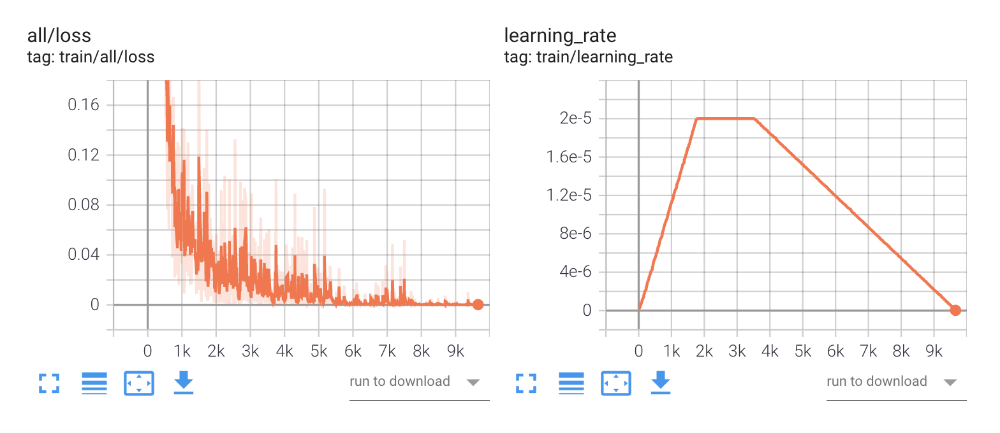

Training
Given a dataset that is properly set up, we can fine-tune a pretrained model for Named Entity Recognition.
Model Sources
nerblackbox works with PyTorch transformer models only. They can either be taken straight from HuggingFace (HF) or the Local Filesystem (LF). In order to employ models from HF, it is sufficient to specify the name of the model (see Basic Training).
Local models need to be stored in a directory ./store/pretrained_models/<my_model> and include the following files:
config.jsonpytorch_model.binvocab.txt
Note that the name for <my_model> must include the architecture type, e.g. bert.
Basic Training
Fine-tuning a specific model on a specific dataset using specific parameters is called an experiment. An experiment is handled by the Experiment class.
Define an Experiment
An experiment is defined
-
either dynamically through arguments when an Experiment instance is created
define experiment dynamically
experiment = Experiment("<experiment_name>", model="<model_name>", dataset="<dataset_name>") -
or statically by an experiment configuration file
./store/experiment_configs/<experiment_name>.ini.define experiment statically
experiment = Experiment("<experiment_name>", from_config=True)
Note that the dynamic variant also creates an experiment configuration, which is subsequently used.
In both cases, the specification of the model and the dataset are mandatory and sufficient.
Training Parameters may be specified but are optional. The hyperparameters that are used by default are globally applicable settings that should give close-to-optimal results for any use case.
In particular, adaptive fine-tuning is employed to ensure that this holds irrespective of the size of the dataset.
Run an Experiment
A fine-tuning experiment is run using the following command:
run experiment
experiment.run()
See the Python API documentation for further details.
Main Results
When an experiment is finished, one can get its main results like so:
Main Results (single experiment)
experiment.get_result(metric="f1", level="entity", phase="test")
See Python API documentation for further details.
An overview of all conducted experiments and their main results can be accessed using the Store class:
Main Results (all experiments)
Store.show_experiments()
Example
An English BERT model can be fine-tuned on the CoNLL-2003 dataset like this:
Example: Training
experiment = Experiment("my_experiment", model="bert-base-cased", dataset="conll2003")
experiment.run()
experiment.get_result(metric="f1", level="entity", phase="test")
# 0.9045
Advanced Training
Parameters
nerblackbox uses a large amount of default (hyper)parameters that can be customized as needed. The concerned parameters just need to be specified when an experiment is defined, either statically or dynamically.
-
In the static case, an experiment configuration file may look like this:
Example: static experiment configuration file with parameters
# my_experiment.ini [dataset] dataset_name = swedish_ner_corpus annotation_scheme = plain prune_ratio_train = 0.1 # for testing prune_ratio_val = 1.0 prune_ratio_test = 1.0 train_on_val = False train_on_test = False [model] pretrained_model_name = af-ai-center/bert-base-swedish-uncased [settings] checkpoints = True logging_level = info multiple_runs = 1 seed = 42 [hparams] max_epochs = 250 early_stopping = True monitor = val_loss min_delta = 0.0 patience = 0 mode = min lr_warmup_epochs = 2 lr_num_cycles = 4 lr_cooldown_restarts = True lr_cooldown_epochs = 7 [runA] batch_size = 16 max_seq_length = 128 lr_max = 2e-5 lr_schedule = constant -
In the dynamic case, the equivalent example is:
Example: dynamic experiment with parameters
experiment = Experiment( "my_experiment", model="af-ai-center/bert-base-swedish-uncased", # model = model_name dataset="swedish_ner_corpus", # dataset = dataset_name annotation_scheme="plain", prune_ratio_train=0.1, # for testing prune_ratio_val=1.0, prune_ratio_test=1.0, train_on_val=False, train_on_test=False, checkpoints=True, logging_level="info", multiple_runs=1, seed=42, max_epochs=250, early_stopping=True, monitor="val_loss", min_delta=0.0, patience=0, mode="min", lr_warmup_epochs=2, lr_num_cycles=4, lr_cooldown_restarts=True, lr_cooldown_epochs=7, batch_size=16, max_seq_length=128, lr_max=2e-5, lr_schedule="constant", )
The parameters can be divided into 4 parameter groups:
- Dataset
- Model
- Settings
- Hyperparameters
In the following, we will go through the different parameters step by step to see what they mean.
1. Dataset
| Key | Mandatory | Default Value | Type | Values | Comment |
|---|---|---|---|---|---|
| dataset_name | Yes | --- | str | e.g. conll2003 | key = dataset can be used instead |
| annotation_scheme | No | auto | str | auto, plain, bio, bilou | specify annotation scheme (e.g. BIO). auto means it is inferred from data |
| prune_ratio_train | No | 1.0 | float | 0.0 - 1.0 | fraction of train dataset to be used |
| prune_ratio_val | No | 1.0 | float | 0.0 - 1.0 | fraction of val dataset to be used |
| prune_ratio_test | No | 1.0 | float | 0.0 - 1.0 | fraction of test dataset to be used |
| train_on_val | No | False | bool | True, False | whether to train additionally on validation dataset |
| train_on_test | No | False | bool | True, False | whether to train additionally on test dataset |
Example: static experiment configuration file with parameters (Dataset)
# my_experiment.ini
# ..
[dataset]
dataset_name = swedish_ner_corpus
annotation_scheme = plain
prune_ratio_train = 0.1 # for testing
prune_ratio_val = 1.0
prune_ratio_test = 1.0
train_on_val = False
train_on_test = False
2. Model
| Key | Mandatory | Default Value | Type | Values | Comment |
|---|---|---|---|---|---|
| pretrained_model_name | Yes | --- | str | e.g. af-ai-center/bert-base-swedish-uncased | key = model can be used instead |
Example: static experiment configuration file with parameters (Model)
# my_experiment.ini
# ..
[model]
pretrained_model_name = af-ai-center/bert-base-swedish-uncased
3. Settings
| Key | Mandatory | Default Value | Type | Values | Comment |
|---|---|---|---|---|---|
| checkpoints | No | True | bool | True, False | whether to save model checkpoints |
| logging_level | No | info | str | info, debug | choose logging level, debug is more verbose |
| multiple_runs | No | 1 | int | 1+ | choose how often each hyperparameter run is executed (to control for statistical uncertainties) |
| seed | No | 42 | int | 1+ | for reproducibility. multiple runs get assigned different seeds. |
Example: static experiment configuration file with parameters (Settings)
# my_experiment.ini
# ..
[settings]
checkpoints = True
logging_level = info
multiple_runs = 1
seed = 42
4. Hyperparameters
| Key | Mandatory | Default Value | Type | Values | Comment |
|---|---|---|---|---|---|
| batch_size | No | 16 | int | e.g. 16, 32, 64 | number of training samples in one batch |
| max_seq_length | No | 128 | int | e.g. 64, 128, 256 | maximum sequence length used for model's input data |
| max_epochs | No | 250 | int | 1+ | (maximum) amount of training epochs |
| early_stopping | No | True | bool | True, False | whether to use early stopping |
| monitor | No | val_loss | str | val_loss, val_acc | if early stopping is True: metric to monitor (acc = accuracy) |
| min_delta | No | 0.0 | float | 0.0+ | if early stopping is True: minimum amount of improvement (w.r.t. monitored metric) required to continue training |
| patience | No | 0 | int | 0+ | if early stopping is True: number of epochs to wait for improvement w.r.t. monitored metric until training is stopped |
| mode | No | min | str | min, max | if early stopping is True: whether the optimum for the monitored metric is the minimum (val_loss) or maximum (val_acc) value |
| lr_warmup_epochs | No | 2 | int | 0+ | number of epochs to linearly increase the learning rate during the warm-up phase, gets translated to num_warmup_steps |
| lr_max | No | 2e-5 | float | e.g. 2e-5, 3e-5 | maximum learning rate (after warm-up) for AdamW optimizer |
| lr_schedule | No | constant | str | constant, linear, cosine, cosine_with_hard_restarts, hybrid | Learning Rate Schedule, i.e. how to vary the learning rate (after warm-up). hybrid = constant + linear cool-down. |
| lr_num_cycles | No | 4 | int | 1+ | num_cycles for lr_schedule = cosine or lr_schedule = cosine_with_hard_restarts |
| lr_cooldown_restarts | No | True | bool | True, False | if early stopping is True: whether to restart normal training if monitored metric improves during cool-down phase |
| lr_cooldown_epochs | No | 7 | int | 0+ | if early stopping is True or lr_schedule == hybrid: number of epochs to linearly decrease the learning rate during the cool-down phase |
Example: static experiment configuration file with parameters (Hyperparameters)
# my_experiment.ini
# ..
[hparams]
max_epochs = 250
early_stopping = True
monitor = val_loss
min_delta = 0.0
patience = 0
mode = min
lr_warmup_epochs = 2
lr_num_cycles = 4
lr_cooldown_restarts = True
lr_cooldown_epochs = 7
[runA]
batch_size = 16
max_seq_length = 128
lr_max = 2e-5
lr_schedule = constant
Presets
In addition to the manual specification of the parameters discussed above,
the dynamic experiment definition allows for the use of several hyperparameter presets.
They can be specified using the from_preset argument in Experiment() like so:
define experiment dynamically using preset
experiment = Experiment("<experiment_name>", model="<model_name>", dataset="<dataset_name>", from_preset="adaptive")
In the following, we list the different presets together with the Hyperparameters that they entail:
-
from_preset = adaptiveAdaptive fine-tuning (introduced in this paper) is a method that automatically trains for a near-optimal number of epochs. It is used by default in nerblackbox.
adaptive fine-tuning preset
[hparams] max_epochs = 250 early_stopping = True monitor = val_loss min_delta = 0.0 patience = 0 mode = min lr_warmup_epochs = 2 lr_schedule = constant lr_cooldown_epochs = 7 -
from_preset = originalOriginal fine-tuning uses the hyperparameters from the original BERT paper. The hyperparameters are suitable for large datasets.
original fine-tuning preset
[hparams] max_epochs = 5 early_stopping = False lr_warmup_epochs = 2 lr_schedule = linear -
from_preset = stableStable fine-tuning is a method based on this paper. It is suitable for both small and large datasets.
stable fine-tuning preset
[hparams] max_epochs = 20 early_stopping = False lr_warmup_epochs = 2 lr_schedule = linear
Hyperparameter Search
A hyperparameter grid search can easily be conducted as part of an experiment (currently only using the static definition).
The hyperparameters one wants to vary are to be specified in special sections [runA], [runB] etc. in the experiment configuration file.
Example: Hyperparameter Search
# my_experiment.ini
# ..
[runA]
batch_size = 16
max_seq_length = 128
lr_max = 2e-5
lr_schedule = constant
[runB]
batch_size = 32
max_seq_length = 64
lr_max = 3e-5
lr_schedule = cosine
runA & runB). Each hyperparameter run is executed multiple_runs times (see Parameters).
Multiple Seeds
The results of a fine-tuning run depend on the employed random seed, see e.g. this paper for a discussion. One may conduct multiple runs with different seeds that are otherwise identical, in order to
-
get control over the uncertainties (see Detailed Results)
-
get an improved model performance
Multiple runs can easily be specified in the experiment configuration.
Example: Settings / Multiple Runs
# my_experiment.ini
# ..
[settings]
multiple_runs = 3
seed = 42
This creates 3 runs with seeds 43, 44 and 45.
Detailed Results
In addition to the Main Results, one may have a look at much more detailed results of an experiment
using mlflow or tensorboard.
Detailed Results
Store.mlflow("start") # + enter http://localhost:5000 in your browser
Store.tensorboard("start") # + enter http://localhost:6006 in your browser
nerbb mlflow # + enter http://localhost:5000 in your browser
nerbb tensorboard # + enter http://localhost:6006 in your browser
Python: The underlying processes can be stopped using
Store.mlflow("stop")
and Store.tensorboard("stop").
-
mlflowdisplays precision, recall and f1 score for every single class, as well the respective micro- and macro-averages over all classes, both on the token and entity level.The following excerpt shows
-
the micro- and macro-averages of the recall on the entity level
-
precision, recall and f1 score for the LOC(ation) class on the token level

In addition, one has access to the log file and the confusion matrices (token and entity level) of the model predictions on the test set. A small excerpt is shown below:

-
-
tensorboardshows the learning curves of important metrics like the loss and the f1 score.A small excerpt is shown below:
